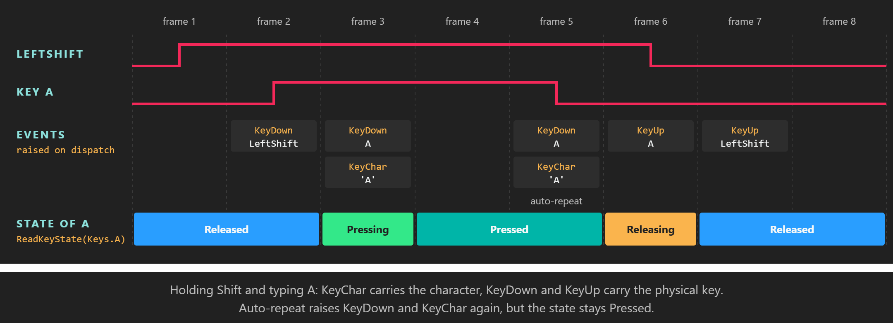

Keyboard

Key states answer "is this key down"; KeyChar answers "what did the user type".
The keyboard is the main input device on desktop platforms. KeyboardDispatcher tracks the state of every physical key, identified by the Keys enumeration, and raises events for key presses and for typed characters. Use the states for game controls and shortcuts, and the KeyChar event for text input.
KeyboardDispatcher
Get it from display.KeyboardDispatcher (see Where input comes from). It lives in the Evergine.Common.Input.Keyboard namespace, together with Keys.
Methods
| Member | Description |
|---|---|
| ReadKeyState(Keys key) | Returns the state of the key in this frame: Released, Pressing, Pressed or Releasing. |
| IsKeyDown(Keys key) | Returns true when the key is Pressing or Pressed. |
Events
| Event | Arguments | Description |
|---|---|---|
| KeyDown | KeyEventArgs |
A key went down. Raised again for every auto-repeat the platform reports while the key is held, even though the state stays Pressed. |
| KeyUp | KeyEventArgs |
A key went up. |
| KeyChar | KeyCharEventArgs |
A character was typed. It carries the character that the platform produced from the keyboard layout and modifiers ('A' with Shift, 'a' without), and repeats with auto-repeat. |
| Event argument | Member | Description |
|---|---|---|
KeyEventArgs |
Key | The Keys value of the physical key. Left and right modifiers are distinct: LeftShift, RightShift, LeftControl, RightControl, LeftAlt, RightAlt. |
KeyEventArgs |
IsDown | True for KeyDown, false for KeyUp. |
KeyCharEventArgs |
Character | The typed char. |
All three events are raised during DispatchEvents(), at the start of the frame and before any component updates, in the order the platform delivered them.
Note
KeyChar skips characters with codes up to 13, which include Backspace, Tab and Enter. Handle those keys with KeyDown or ReadKeyState.
Note
The Windows Forms, WPF and Web window systems release every held key when the window loses focus, so a key never stays stuck down after the user switches to another application.
Example: controls from key states
This behavior moves its entity on the XZ plane with the arrow keys and resets its position with R. It polls states every frame and uses no events.
using System;
using Evergine.Common.Input;
using Evergine.Common.Input.Keyboard;
using Evergine.Framework;
using Evergine.Framework.Graphics;
using Evergine.Framework.Services;
using Evergine.Mathematics;
public class ArrowKeysMover : Behavior
{
[BindService]
private GraphicsPresenter graphicsPresenter = null;
[BindComponent]
private Transform3D transform = null;
public float Speed { get; set; } = 2f;
protected override void Update(TimeSpan gameTime)
{
KeyboardDispatcher keyboard = this.graphicsPresenter.FocusedDisplay?.KeyboardDispatcher;
if (keyboard == null)
{
return;
}
Vector3 direction = Vector3.Zero;
if (keyboard.IsKeyDown(Keys.Up))
{
direction.Z -= 1f;
}
if (keyboard.IsKeyDown(Keys.Down))
{
direction.Z += 1f;
}
if (keyboard.IsKeyDown(Keys.Left))
{
direction.X -= 1f;
}
if (keyboard.IsKeyDown(Keys.Right))
{
direction.X += 1f;
}
// Scaling by the elapsed time keeps the speed in units per second at any frame rate.
this.transform.LocalPosition += direction * this.Speed * (float)gameTime.TotalSeconds;
// Pressing, not IsKeyDown: holding R resets once instead of pinning the entity in place.
if (keyboard.ReadKeyState(Keys.R) == ButtonState.Pressing)
{
this.transform.LocalPosition = Vector3.Zero;
}
}
}
Example: text input with events
Text belongs to KeyChar, because only it knows the keyboard layout and the modifiers. This component collects what the user types into a string, and uses KeyDown for Backspace, which KeyChar does not report. It subscribes when it is activated and unsubscribes when it is deactivated, so a disabled component stops listening.
using System.Text;
using Evergine.Common.Input.Keyboard;
using Evergine.Framework;
using Evergine.Framework.Services;
public class TextCapture : Component
{
[BindService]
private GraphicsPresenter graphicsPresenter = null;
private readonly StringBuilder text = new StringBuilder();
private KeyboardDispatcher keyboard;
public string Text => this.text.ToString();
protected override void OnActivated()
{
base.OnActivated();
this.keyboard = this.graphicsPresenter.FocusedDisplay?.KeyboardDispatcher;
if (this.keyboard != null)
{
this.keyboard.KeyChar += this.OnKeyChar;
this.keyboard.KeyDown += this.OnKeyDown;
}
}
protected override void OnDeactivated()
{
base.OnDeactivated();
if (this.keyboard != null)
{
this.keyboard.KeyChar -= this.OnKeyChar;
this.keyboard.KeyDown -= this.OnKeyDown;
this.keyboard = null;
}
}
private void OnKeyChar(object sender, KeyCharEventArgs e)
{
this.text.Append(e.Character);
}
private void OnKeyDown(object sender, KeyEventArgs e)
{
// KeyDown repeats while Backspace is held, which gives the usual "hold to delete" behavior.
if (e.Key == Keys.Back && this.text.Length > 0)
{
this.text.Length--;
}
}
}
See also
- Button states: what each state means and when it changes.
- Example: camera controller: WASD movement with
IsKeyDown.